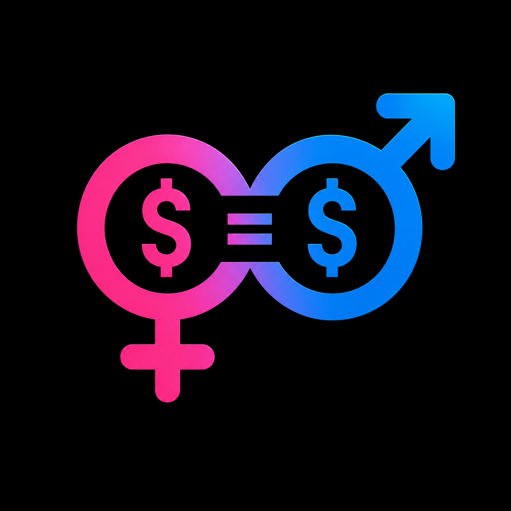

National picture
79c
Across Australia, women earn 79 cents in total remuneration for every dollar men earn on average.
WGEA reports a 21.1% total-remuneration gap, or $28,356 less per year for full-time employees. Source

The Gap Has WeightLearn
These figures show the size of the gap, how it compounds over time, and the workplace structures that keep feeding it.

National picture
79c
Across Australia, women earn 79 cents in total remuneration for every dollar men earn on average.
WGEA reports a 21.1% total-remuneration gap, or $28,356 less per year for full-time employees. Source
Manager pay
Women managers earned 22.8% less than men managers, showing the gap persists even in leadership pathways.
Employment type
Women are more likely to be in part-time work, which changes income, progression, and long-term security.
What time does to the gap
$52k
The annual gap peaks between ages 55 and 59, when women earn about $52,000 less than men in the same age group.
WGEA identifies age 34 as a critical point where the gap accelerates. Source
State and territory snapshot
| State | Gap | Weekly difference | Equal Pay Day |
|---|---|---|---|
| WA | 22.4% | $471.70 | 14 October |
| QLD | 15.6% | $283.20 | 5 September |
| VIC | 14.2% | $263.60 | 30 August |
| NSW | 12.4% | $233.40 | 21 August |
| NT | 12.0% | $217.90 | 19 August |
| ACT | 11.3% | $237.80 | 16 August |
| TAS | 7.5% | $121.60 | 30 July |
| SA | 7.5% | $123.70 | 29 July |
| National | 14.1% | $263.90 | 29 August |
Gap over time